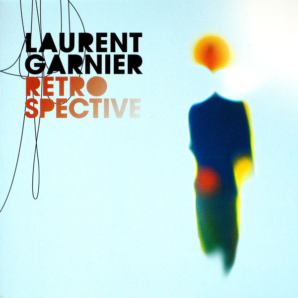

A former staffer at the embassy in London, Frenchman Laurent Garnier began DJing in Manchester during the late '80s. By the following decade, he had become one of the best all-around DJs in the world, able to span classic deep house and Detroit techno, the harder side of acid/trance, and surprisingly jazzy tracks as well. He added production work to his schedule in the early '90s, and recorded several brilliant LPs across two additional decades that displayed a similar penchant for diversity.
One of the first Europeans to begin mixing American house music in Britain, Garnier was one of the prime cogs in the late-'80s Madchester scene. His DJing at Manchester's legendary Haçienda Club provided a major inspiration for the Stone Roses and Happy Mondays to begin adding house rhythms to rock music. Garnier shifted his attention back to France in the early '90s, running the Wake Up Club in Paris for three years and gradually moving into recording as well. For the FNAC label, Garnier released "French Connection" and the Bout de Souffle EP. He then formed the F Communications label with Eric Morand (a friend who had also worked for FNAC). He had amassed quite a discography by the mid-'90s, but his first LP, Shot in the Dark, wasn't launched until 1995. His second, 30, appeared in 1997, followed by the retrospective Early Works.
After trotting the globe with multiple DJ appearances during the late '90s, Garnier returned to the production realm in 2000 with Unreasonable Behaviour, which was followed by the 2005 set Cloud Making Machine. Retrospective: 1994-2006 combined major singles like "Crispy Bacon" and "The Man with the Red Face" with standout remixes for the likes of Alex Attias and Carl Craig. A couple years later, Garnier offered the expansive -- even by his standard -- Tales of a Kleptomaniac. Throughout the decade, he also put together a handful of varied mix albums: Excess Luggage, Life: Styles, and The Kings of Techno, the last of which was a two-disc set shared with comrade Craig.
The 2010s were slightly less active for Garnier only when it came to traditional studio content. DJing, broadcasting, and operating F Communications kept him occupied, as did making music for dance productions, television, and film. The year 2015 brought La Home Box, a helpful compilation that rounded up then-recent tracks issued on 12" and as digital downloads for an assortment of labels, including Hypercolour, 50 Weapons, and Still Music, as well as some exclusive tracks.
After 30 years devoted to music, Laurent has been made Chevalier de la Légion d´Honneur in 2017, the highest French order of merit, both military and civil.
This biography has been taken from John Bush work, that you can find here.
Shot In the Dark (1994)
30 (1997)
Unreasonable Behaviour (2000)
Retrospective 94/06
La Home Box (2015)
Speicher 95 - Tribute EP (2017)